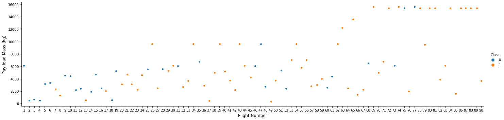
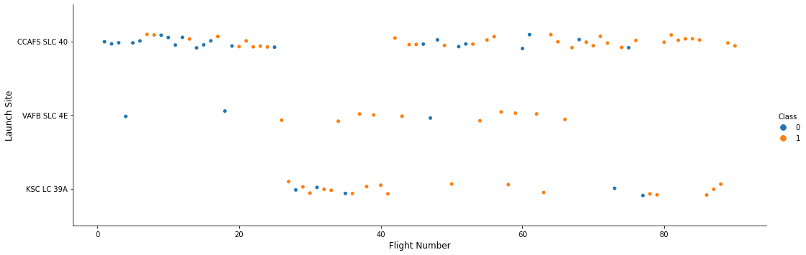
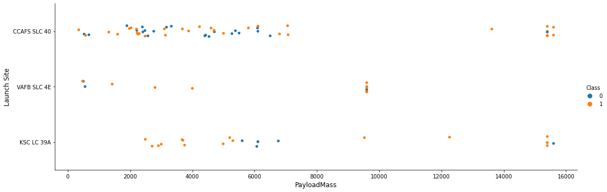
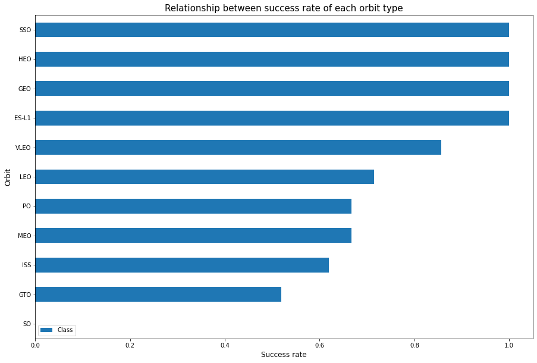
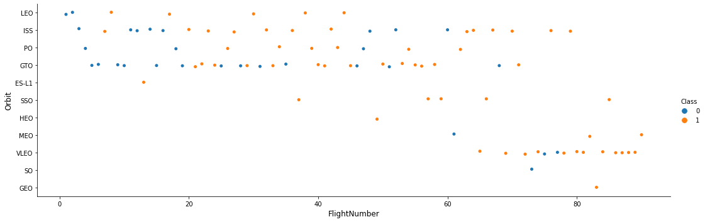
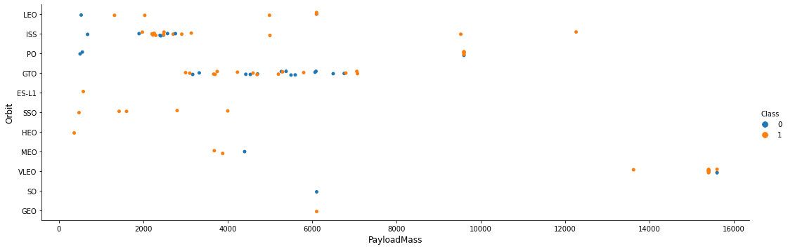
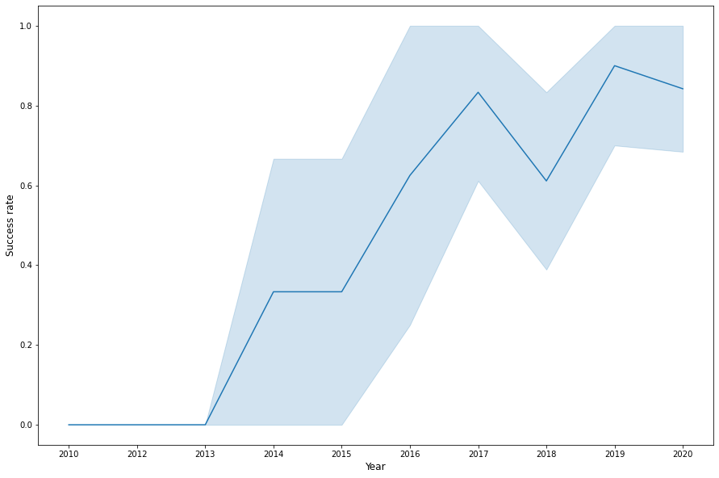

# andas is a software library written for the Python programming language for data manipulation and analysis.
import pandas as pd
#NumPy is a library for the Python programming language, adding support for large, multi-dimensional arrays and matrices, along with a large collection of high-level mathematical functions to operate on these arrays
import numpy as np
# Matplotlib is a plotting library for python and pyplot gives us a MatLab like plotting framework. We will use this in our plotter function to plot data.
import matplotlib.pyplot as plt
#Seaborn is a Python data visualization library based on matplotlib. It provides a high-level interface for drawing attractive and informative statistical graphics
import seaborn as snsSpaceX Falcon 9 First Stage Landing Prediction
Assignment: Exploring and Preparing Data
Estimated time needed: 70 minutes
In this assignment, we will predict if the Falcon 9 first stage will land successfully. SpaceX advertises Falcon 9 rocket launches on its website with a cost of 62 million dollars; other providers cost upward of 165 million dollars each, much of the savings is due to the fact that SpaceX can reuse the first stage.
In this lab, you will perform Exploratory Data Analysis and Feature Engineering.
Falcon 9 first stage will land successfully

Several examples of an unsuccessful landing are shown here:

Most unsuccessful landings are planned. Space X performs a controlled landing in the oceans.
Objectives
Perform exploratory Data Analysis and Feature Engineering using Pandas and Matplotlib
- Exploratory Data Analysis
- Preparing Data Feature Engineering
Import Libraries and Define Auxiliary Functions
We will import the following libraries the lab
Exploratory Data Analysis
First, let’s read the SpaceX dataset into a Pandas dataframe and print its summary
df=pd.read_csv("https://cf-courses-data.s3.us.cloud-object-storage.appdomain.cloud/IBM-DS0321EN-SkillsNetwork/datasets/dataset_part_2.csv")
# If you were unable to complete the previous lab correctly you can uncomment and load this csv
# df = pd.read_csv('https://cf-courses-data.s3.us.cloud-object-storage.appdomain.cloud/IBMDeveloperSkillsNetwork-DS0701EN-SkillsNetwork/api/dataset_part_2.csv')
df.head(5)| FlightNumber | Date | BoosterVersion | PayloadMass | Orbit | LaunchSite | Outcome | Flights | GridFins | Reused | Legs | LandingPad | Block | ReusedCount | Serial | Longitude | Latitude | Class | |
|---|---|---|---|---|---|---|---|---|---|---|---|---|---|---|---|---|---|---|
| 0 | 1 | 2010-06-04 | Falcon 9 | 6104.959412 | LEO | CCAFS SLC 40 | None None | 1 | False | False | False | NaN | 1.0 | 0 | B0003 | -80.577366 | 28.561857 | 0 |
| 1 | 2 | 2012-05-22 | Falcon 9 | 525.000000 | LEO | CCAFS SLC 40 | None None | 1 | False | False | False | NaN | 1.0 | 0 | B0005 | -80.577366 | 28.561857 | 0 |
| 2 | 3 | 2013-03-01 | Falcon 9 | 677.000000 | ISS | CCAFS SLC 40 | None None | 1 | False | False | False | NaN | 1.0 | 0 | B0007 | -80.577366 | 28.561857 | 0 |
| 3 | 4 | 2013-09-29 | Falcon 9 | 500.000000 | PO | VAFB SLC 4E | False Ocean | 1 | False | False | False | NaN | 1.0 | 0 | B1003 | -120.610829 | 34.632093 | 0 |
| 4 | 5 | 2013-12-03 | Falcon 9 | 3170.000000 | GTO | CCAFS SLC 40 | None None | 1 | False | False | False | NaN | 1.0 | 0 | B1004 | -80.577366 | 28.561857 | 0 |
First, let’s try to see how the FlightNumber (indicating the continuous launch attempts.) and Payload variables would affect the launch outcome.
We can plot out the FlightNumber vs. PayloadMassand overlay the outcome of the launch. We see that as the flight number increases, the first stage is more likely to land successfully. The payload mass is also important; it seems the more massive the payload, the less likely the first stage will return.
sns.catplot(y="PayloadMass", x="FlightNumber", hue="Class", data=df, aspect = 4)
plt.xlabel("Flight Number",fontsize=12)
plt.ylabel("Pay load Mass (kg)",fontsize=12)
plt.show()
We see that different launch sites have different success rates. CCAFS LC-40, has a success rate of 60 %, while KSC LC-39A and VAFB SLC 4E has a success rate of 77%.
Next, let’s drill down to each site visualize its detailed launch records.
TASK 1: Visualize the relationship between Flight Number and Launch Site
Use the function catplot to plot FlightNumber vs LaunchSite, set the parameter x parameter to FlightNumber,set the y to Launch Site and set the parameter hue to ‘class’
# Plot a scatter point chart with x axis to be Flight Number and y axis to be the launch site, and hue to be the class value
sns.catplot(x="FlightNumber", y="LaunchSite", hue="Class", data=df, aspect = 3)
plt.xlabel("Flight Number",fontsize=12)
plt.ylabel("Launch Site",fontsize=12)
plt.show()
Now try to explain the patterns you found in the Flight Number vs. Launch Site scatter point plots.
TASK 2: Visualize the relationship between Payload and Launch Site
We also want to observe if there is any relationship between launch sites and their payload mass.
# Plot a scatter point chart with x axis to be Pay Load Mass (kg) and y axis to be the launch site, and hue to be the class value
sns.catplot(x="PayloadMass", y="LaunchSite", hue="Class", data=df, aspect = 3)
plt.xlabel("PayloadMass",fontsize=12)
plt.ylabel("Launch Site",fontsize=12)
plt.show()
Now if you observe Payload Vs. Launch Site scatter point chart you will find for the VAFB-SLC launchsite there are no rockets launched for heavypayload mass(greater than 10000).
TASK 3: Visualize the relationship between success rate of each orbit type
Next, we want to visually check if there are any relationship between success rate and orbit type.
Let’s create a bar chart for the sucess rate of each orbit
# HINT use groupby method on Orbit column and get the mean of Class column
success_rate = df[['Orbit','Class']].groupby('Orbit').mean().sort_values('Class')
print(success_rate, '\n')
success_rate.plot(kind='barh', figsize=(15, 10))
plt.title('Relationship between success rate of each orbit type', fontsize=15)
plt.xlabel('Success rate', fontsize=12)
plt.ylabel('Orbit', fontsize=12)
plt.show() Class
Orbit
SO 0.000000
GTO 0.518519
ISS 0.619048
MEO 0.666667
PO 0.666667
LEO 0.714286
VLEO 0.857143
ES-L1 1.000000
GEO 1.000000
HEO 1.000000
SSO 1.000000

Analyze the ploted bar chart try to find which orbits have high sucess rate.
TASK 4: Visualize the relationship between FlightNumber and Orbit type
For each orbit, we want to see if there is any relationship between FlightNumber and Orbit type.
# Plot a scatter point chart with x axis to be FlightNumber and y axis to be the Orbit, and hue to be the class value
sns.catplot(x="FlightNumber", y="Orbit", hue="Class", data=df, aspect = 3)
plt.xlabel("FlightNumber",fontsize=12)
plt.ylabel("Orbit",fontsize=12)
plt.show()
You should see that in the LEO orbit the Success appears related to the number of flights; on the other hand, there seems to be no relationship between flight number when in GTO orbit.
TASK 5: Visualize the relationship between Payload and Orbit type
Similarly, we can plot the Payload vs. Orbit scatter point charts to reveal the relationship between Payload and Orbit type
# Plot a scatter point chart with x axis to be Payload and y axis to be the Orbit, and hue to be the class value
sns.catplot(x="PayloadMass", y="Orbit", hue="Class", data=df, aspect = 3)
plt.xlabel("PayloadMass",fontsize=12)
plt.ylabel("Orbit",fontsize=12)
plt.show()
With heavy payloads the successful landing or positive landing rate are more for Polar,LEO and ISS.
However for GTO we cannot distinguish this well as both positive landing rate and negative landing(unsuccessful mission) are both there here.
TASK 6: Visualize the launch success yearly trend
You can plot a line chart with x axis to be Year and y axis to be average success rate, to get the average launch success trend.
The function will help you get the year from the date:
# A function to Extract years from the date
year=[]
def Extract_year(date):
for i in df["Date"]:
year.append(i.split("-")[0])
return year
Extract_year(df.Date)
df['Year'] = year
df.head()| FlightNumber | Date | BoosterVersion | PayloadMass | Orbit | LaunchSite | Outcome | Flights | GridFins | Reused | Legs | LandingPad | Block | ReusedCount | Serial | Longitude | Latitude | Class | Year | |
|---|---|---|---|---|---|---|---|---|---|---|---|---|---|---|---|---|---|---|---|
| 0 | 1 | 2010-06-04 | Falcon 9 | 6104.959412 | LEO | CCAFS SLC 40 | None None | 1 | False | False | False | NaN | 1.0 | 0 | B0003 | -80.577366 | 28.561857 | 0 | 2010 |
| 1 | 2 | 2012-05-22 | Falcon 9 | 525.000000 | LEO | CCAFS SLC 40 | None None | 1 | False | False | False | NaN | 1.0 | 0 | B0005 | -80.577366 | 28.561857 | 0 | 2012 |
| 2 | 3 | 2013-03-01 | Falcon 9 | 677.000000 | ISS | CCAFS SLC 40 | None None | 1 | False | False | False | NaN | 1.0 | 0 | B0007 | -80.577366 | 28.561857 | 0 | 2013 |
| 3 | 4 | 2013-09-29 | Falcon 9 | 500.000000 | PO | VAFB SLC 4E | False Ocean | 1 | False | False | False | NaN | 1.0 | 0 | B1003 | -120.610829 | 34.632093 | 0 | 2013 |
| 4 | 5 | 2013-12-03 | Falcon 9 | 3170.000000 | GTO | CCAFS SLC 40 | None None | 1 | False | False | False | NaN | 1.0 | 0 | B1004 | -80.577366 | 28.561857 | 0 | 2013 |
# Plot a line chart with x axis to be the extracted year and y axis to be the success rate
plt.figure(figsize=(15,10))
sns.lineplot(x='Year', y='Class', data=df)
plt.xlabel('Year', fontsize=12)
plt.ylabel('Success rate', fontsize=12)
plt.show()
you can observe that the sucess rate since 2013 kept increasing till 2020
Features Engineering
By now, you should obtain some preliminary insights about how each important variable would affect the success rate, we will select the features that will be used in success prediction in the future module.
features = df[['FlightNumber', 'PayloadMass', 'Orbit', 'LaunchSite', 'Flights', 'GridFins', 'Reused', 'Legs', 'LandingPad', 'Block', 'ReusedCount', 'Serial']]
features.head()| FlightNumber | PayloadMass | Orbit | LaunchSite | Flights | GridFins | Reused | Legs | LandingPad | Block | ReusedCount | Serial | |
|---|---|---|---|---|---|---|---|---|---|---|---|---|
| 0 | 1 | 6104.959412 | LEO | CCAFS SLC 40 | 1 | False | False | False | NaN | 1.0 | 0 | B0003 |
| 1 | 2 | 525.000000 | LEO | CCAFS SLC 40 | 1 | False | False | False | NaN | 1.0 | 0 | B0005 |
| 2 | 3 | 677.000000 | ISS | CCAFS SLC 40 | 1 | False | False | False | NaN | 1.0 | 0 | B0007 |
| 3 | 4 | 500.000000 | PO | VAFB SLC 4E | 1 | False | False | False | NaN | 1.0 | 0 | B1003 |
| 4 | 5 | 3170.000000 | GTO | CCAFS SLC 40 | 1 | False | False | False | NaN | 1.0 | 0 | B1004 |
TASK 7: Create dummy variables to categorical columns
Use the function get_dummies and features dataframe to apply OneHotEncoder to the column Orbits, LaunchSite, LandingPad, and Serial. Assign the value to the variable features_one_hot, display the results using the method head. Your result dataframe must include all features including the encoded ones.
# HINT: Use get_dummies() function on the categorical columns
features_one_hot = pd.get_dummies(features, columns=['Orbit', 'LaunchSite', 'LandingPad', 'Serial'])
features_one_hot.head()| FlightNumber | PayloadMass | Flights | GridFins | Reused | Legs | Block | ReusedCount | Orbit_ES-L1 | Orbit_GEO | ... | Serial_B1048 | Serial_B1049 | Serial_B1050 | Serial_B1051 | Serial_B1054 | Serial_B1056 | Serial_B1058 | Serial_B1059 | Serial_B1060 | Serial_B1062 | |
|---|---|---|---|---|---|---|---|---|---|---|---|---|---|---|---|---|---|---|---|---|---|
| 0 | 1 | 6104.959412 | 1 | False | False | False | 1.0 | 0 | 0 | 0 | ... | 0 | 0 | 0 | 0 | 0 | 0 | 0 | 0 | 0 | 0 |
| 1 | 2 | 525.000000 | 1 | False | False | False | 1.0 | 0 | 0 | 0 | ... | 0 | 0 | 0 | 0 | 0 | 0 | 0 | 0 | 0 | 0 |
| 2 | 3 | 677.000000 | 1 | False | False | False | 1.0 | 0 | 0 | 0 | ... | 0 | 0 | 0 | 0 | 0 | 0 | 0 | 0 | 0 | 0 |
| 3 | 4 | 500.000000 | 1 | False | False | False | 1.0 | 0 | 0 | 0 | ... | 0 | 0 | 0 | 0 | 0 | 0 | 0 | 0 | 0 | 0 |
| 4 | 5 | 3170.000000 | 1 | False | False | False | 1.0 | 0 | 0 | 0 | ... | 0 | 0 | 0 | 0 | 0 | 0 | 0 | 0 | 0 | 0 |
5 rows × 80 columns
features_one_hot.columnsIndex(['FlightNumber', 'PayloadMass', 'Flights', 'GridFins', 'Reused', 'Legs',
'Block', 'ReusedCount', 'Orbit_ES-L1', 'Orbit_GEO', 'Orbit_GTO',
'Orbit_HEO', 'Orbit_ISS', 'Orbit_LEO', 'Orbit_MEO', 'Orbit_PO',
'Orbit_SO', 'Orbit_SSO', 'Orbit_VLEO', 'LaunchSite_CCAFS SLC 40',
'LaunchSite_KSC LC 39A', 'LaunchSite_VAFB SLC 4E',
'LandingPad_5e9e3032383ecb267a34e7c7',
'LandingPad_5e9e3032383ecb554034e7c9',
'LandingPad_5e9e3032383ecb6bb234e7ca',
'LandingPad_5e9e3032383ecb761634e7cb',
'LandingPad_5e9e3033383ecbb9e534e7cc', 'Serial_B0003', 'Serial_B0005',
'Serial_B0007', 'Serial_B1003', 'Serial_B1004', 'Serial_B1005',
'Serial_B1006', 'Serial_B1007', 'Serial_B1008', 'Serial_B1010',
'Serial_B1011', 'Serial_B1012', 'Serial_B1013', 'Serial_B1015',
'Serial_B1016', 'Serial_B1017', 'Serial_B1018', 'Serial_B1019',
'Serial_B1020', 'Serial_B1021', 'Serial_B1022', 'Serial_B1023',
'Serial_B1025', 'Serial_B1026', 'Serial_B1028', 'Serial_B1029',
'Serial_B1030', 'Serial_B1031', 'Serial_B1032', 'Serial_B1034',
'Serial_B1035', 'Serial_B1036', 'Serial_B1037', 'Serial_B1038',
'Serial_B1039', 'Serial_B1040', 'Serial_B1041', 'Serial_B1042',
'Serial_B1043', 'Serial_B1044', 'Serial_B1045', 'Serial_B1046',
'Serial_B1047', 'Serial_B1048', 'Serial_B1049', 'Serial_B1050',
'Serial_B1051', 'Serial_B1054', 'Serial_B1056', 'Serial_B1058',
'Serial_B1059', 'Serial_B1060', 'Serial_B1062'],
dtype='object')TASK 8: Cast all numeric columns to float64
Now that our features_one_hot dataframe only contains numbers cast the entire dataframe to variable type float64
features_one_hot.info()<class 'pandas.core.frame.DataFrame'>
RangeIndex: 90 entries, 0 to 89
Data columns (total 80 columns):
# Column Non-Null Count Dtype
--- ------ -------------- -----
0 FlightNumber 90 non-null int64
1 PayloadMass 90 non-null float64
2 Flights 90 non-null int64
3 GridFins 90 non-null bool
4 Reused 90 non-null bool
5 Legs 90 non-null bool
6 Block 90 non-null float64
7 ReusedCount 90 non-null int64
8 Orbit_ES-L1 90 non-null uint8
9 Orbit_GEO 90 non-null uint8
10 Orbit_GTO 90 non-null uint8
11 Orbit_HEO 90 non-null uint8
12 Orbit_ISS 90 non-null uint8
13 Orbit_LEO 90 non-null uint8
14 Orbit_MEO 90 non-null uint8
15 Orbit_PO 90 non-null uint8
16 Orbit_SO 90 non-null uint8
17 Orbit_SSO 90 non-null uint8
18 Orbit_VLEO 90 non-null uint8
19 LaunchSite_CCAFS SLC 40 90 non-null uint8
20 LaunchSite_KSC LC 39A 90 non-null uint8
21 LaunchSite_VAFB SLC 4E 90 non-null uint8
22 LandingPad_5e9e3032383ecb267a34e7c7 90 non-null uint8
23 LandingPad_5e9e3032383ecb554034e7c9 90 non-null uint8
24 LandingPad_5e9e3032383ecb6bb234e7ca 90 non-null uint8
25 LandingPad_5e9e3032383ecb761634e7cb 90 non-null uint8
26 LandingPad_5e9e3033383ecbb9e534e7cc 90 non-null uint8
27 Serial_B0003 90 non-null uint8
28 Serial_B0005 90 non-null uint8
29 Serial_B0007 90 non-null uint8
30 Serial_B1003 90 non-null uint8
31 Serial_B1004 90 non-null uint8
32 Serial_B1005 90 non-null uint8
33 Serial_B1006 90 non-null uint8
34 Serial_B1007 90 non-null uint8
35 Serial_B1008 90 non-null uint8
36 Serial_B1010 90 non-null uint8
37 Serial_B1011 90 non-null uint8
38 Serial_B1012 90 non-null uint8
39 Serial_B1013 90 non-null uint8
40 Serial_B1015 90 non-null uint8
41 Serial_B1016 90 non-null uint8
42 Serial_B1017 90 non-null uint8
43 Serial_B1018 90 non-null uint8
44 Serial_B1019 90 non-null uint8
45 Serial_B1020 90 non-null uint8
46 Serial_B1021 90 non-null uint8
47 Serial_B1022 90 non-null uint8
48 Serial_B1023 90 non-null uint8
49 Serial_B1025 90 non-null uint8
50 Serial_B1026 90 non-null uint8
51 Serial_B1028 90 non-null uint8
52 Serial_B1029 90 non-null uint8
53 Serial_B1030 90 non-null uint8
54 Serial_B1031 90 non-null uint8
55 Serial_B1032 90 non-null uint8
56 Serial_B1034 90 non-null uint8
57 Serial_B1035 90 non-null uint8
58 Serial_B1036 90 non-null uint8
59 Serial_B1037 90 non-null uint8
60 Serial_B1038 90 non-null uint8
61 Serial_B1039 90 non-null uint8
62 Serial_B1040 90 non-null uint8
63 Serial_B1041 90 non-null uint8
64 Serial_B1042 90 non-null uint8
65 Serial_B1043 90 non-null uint8
66 Serial_B1044 90 non-null uint8
67 Serial_B1045 90 non-null uint8
68 Serial_B1046 90 non-null uint8
69 Serial_B1047 90 non-null uint8
70 Serial_B1048 90 non-null uint8
71 Serial_B1049 90 non-null uint8
72 Serial_B1050 90 non-null uint8
73 Serial_B1051 90 non-null uint8
74 Serial_B1054 90 non-null uint8
75 Serial_B1056 90 non-null uint8
76 Serial_B1058 90 non-null uint8
77 Serial_B1059 90 non-null uint8
78 Serial_B1060 90 non-null uint8
79 Serial_B1062 90 non-null uint8
dtypes: bool(3), float64(2), int64(3), uint8(72)
memory usage: 10.2 KB# HINT: use astype function
features_one_hot = features_one_hot.astype('float64')features_one_hot.dtypesFlightNumber float64
PayloadMass float64
Flights float64
GridFins float64
Reused float64
...
Serial_B1056 float64
Serial_B1058 float64
Serial_B1059 float64
Serial_B1060 float64
Serial_B1062 float64
Length: 80, dtype: objectWe can now export it to a CSV for the next section,but to make the answers consistent, in the next lab we will provide data in a pre-selected date range.
features_one_hot.to_csv(‘dataset_part_3.csv’, index=False)
features_one_hot.to_csv('dataset_part_3.csv', index=False)Change Log
| Date (YYYY-MM-DD) | Version | Changed By | Change Description |
|---|---|---|---|
| 2021-10-12 | 1.1 | Lakshmi Holla | Modified markdown |
| 2020-09-20 | 1.0 | Joseph | Modified Multiple Areas |
| 2020-11-10 | 1.1 | Nayef | updating the input data |
Copyright © 2020 IBM Corporation. All rights reserved.